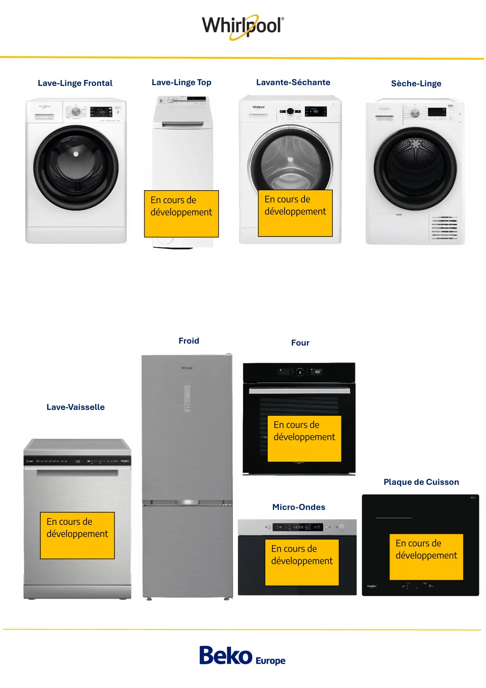

Lave-Linge FrontalLave-Linge TopLavante-SéchanteSèche-LingeLave-VaisselleFroidMicro-OndesFourPlaque de CuissonEn cours dedéveloppementEn cours dedéveloppementEn cours dedéveloppementEn cours dedéveloppementEn cours dedéveloppementEn cours dedéveloppement
1 / 1